2. Advanced water and energy balance simulation
Miquel De Caceres
2019-06-04
2_AdvancedWaterEnergyBalance.RmdAbout this vignette
This document describes how to run a water and energy balance model that uses a more detailed approach for hydraulics and stomatal regulation. This document is meant to teach users to run the simulation model within R. All the details of the model design and formulation are given in a separate document that can be found on the website of the R package (http://vegmod.ctfc.cat/medfateweb).
Preparing model inputs
Most details of the soil plant water balance model inputs are already covered in vignette 1. Introduction to water balance simulation. Here only differences are mentioned.
Soils
The soil input for function is actually an object of class soil that is created using a function with the same name:
Advanced soil plant energy and water balance modelling requires considering the temperature of soil. Hence, Temp contains the temperature (in degrees) of soil layers:
examplesoil$Temp## [1] NA NASoil layer temperatures are initialized to missing values, so that at the first time step they will be set to atmospheric temperature. While simple water balance modeling can be run using either Saxton’s or Van Genuchten’s equations as water retention curves, Van Genuchten’s model is forced for advanced modelling.
Species data table
Simulation models in medfate require a data frame with species parameter values. The package provides a default data set of parameter values for 89 Mediterranean species (rows), resulting from bibliographic search, fit to empirical data or expert-based guesses:
data("SpParamsMED")These species commonly occur in the Spanish forest inventory of Catalonia, but may not be sufficient for other areas. A large number of parameters (columns) can be found in SpParamsMED:
names(SpParamsMED)## [1] "Name" "IFNcodes" "SpIndex"
## [4] "Group" "Order" "Family"
## [7] "GrowthForm" "TreeType" "Hmed"
## [10] "Hmax" "Z50" "Z95"
## [13] "Zmax" "a_ash" "a_bsh"
## [16] "b_bsh" "cr" "a_fbt"
## [19] "b_fbt" "c_fbt" "d_fbt"
## [22] "a_cr" "b_1cr" "b_2cr"
## [25] "b_3cr" "c_1cr" "c_2cr"
## [28] "a_cw" "b_cw" "fHDmin"
## [31] "fHDmax" "SLA" "LeafDensity"
## [34] "r635" "pDead" "maxFMC"
## [37] "minFMC" "LeafPI0" "LeafEPS"
## [40] "LeafAF" "StemPI0" "StemEPS"
## [43] "StemAF" "LeafDuration" "LigninPercent"
## [46] "ParticleDensity" "LeafLitterFuelType" "Flammability"
## [49] "SAV" "HeatContent" "albedo"
## [52] "k" "g" "Sgdd"
## [55] "Psi_Extract" "WUE" "pRootDisc"
## [58] "Gwmin" "Gwmax" "VCleaf_kmax"
## [61] "VCleaf_c" "VCleaf_d" "Kmax_stemxylem"
## [64] "VCstem_c" "VCstem_d" "Kmax_rootxylem"
## [67] "VCroot_c" "VCroot_d" "LeafWidth"
## [70] "Narea" "Vmax298" "Jmax298"
## [73] "Al2As" "WoodDensity" "WoodC"
## [76] "RGRmax" "Cstoragepmax"Not all parameters are needed for all models. The user can find parameter definitions in the help page of this data set. However, to fully understand the role of parameters in the model, the user should read the details of model design and formulation (http://vegmod.ctfc.cat/medfateweb).
Vegetation
Models included in medfate were primarily designed to be ran on forest inventory plots (these are explained in detail in 1. Introduction to water balance simulation):
data(exampleforest)
exampleforest## $ID
## [1] "1"
##
## $patchsize
## [1] 10000
##
## $treeData
## Species N DBH Height Z50 Z95
## 1 54 168 37.55 800 750 3000
## 2 68 384 14.60 660 750 3000
##
## $shrubData
## Species Cover Height Z50 Z95
## 1 65 3.75 30 50 1000
##
## $herbCover
## [1] 10
##
## $herbHeight
## [1] 20
##
## $seedBank
## Species Abundance
## 5 54 100
## 8 65 100
## 9 68 100
##
## attr(,"class")
## [1] "forest" "list"Meteorological forcing
Advanced water and energy balance modeling requires daily precipitation, radiation, wind speed, min/max temparatures and relative humitidy as inputs:
data(examplemeteo)
head(examplemeteo)## MeanTemperature MinTemperature MaxTemperature Precipitation
## 2001-01-01 3.57668969 -0.5934215 6.287950 4.869109
## 2001-01-02 1.83695972 -2.3662458 4.569737 2.498292
## 2001-01-03 0.09462563 -3.8541036 2.661951 0.000000
## 2001-01-04 1.13866156 -1.8744860 3.097705 5.796973
## 2001-01-05 4.70578690 0.3288287 7.551532 1.884401
## 2001-01-06 4.57036721 0.5461322 7.186784 13.359801
## MeanRelativeHumidity MinRelativeHumidity MaxRelativeHumidity
## 2001-01-01 78.73709 65.15411 100.00000
## 2001-01-02 69.70800 57.43761 94.71780
## 2001-01-03 70.69610 58.77432 94.66823
## 2001-01-04 76.89156 66.84256 95.80950
## 2001-01-05 76.67424 62.97656 100.00000
## 2001-01-06 89.01940 74.25754 100.00000
## Radiation WindSpeed WindDirection PET
## 2001-01-01 12.89251 2.000000 172 1.3212770
## 2001-01-02 13.03079 7.662544 278 2.2185985
## 2001-01-03 16.90722 2.000000 141 1.8045176
## 2001-01-04 11.07275 2.000000 172 0.9200627
## 2001-01-05 13.45205 7.581347 321 2.2914449
## 2001-01-06 12.84841 6.570501 141 1.7255058Simulation models in medfate have been designed to work along with data generated from package meteoland. The user is strongly recommended to resort to this package to obtain suitable weather input for soil water balance simulations.
Simulation control
Apart from data inputs, the behaviour of simulation models is controlled using a set of global parameters. The default parameterization is obtained using function defaultControl():
control = defaultControl()To use the complex soil water balance model we must change the values of transpirationMode (to switch from “Granier” to “Sperry”) and soilFunctions (to switch from Saxton’s retention curve, “SX”, to Van Genuchten’s retention curve, “VG”):
control$transpirationMode = "Sperry"
control$soilFunctions = "VG"
Water balance input object
A last step is needed before running the simulation function, consisting in the compilation of parameters and the calculation of additional parameter values for each plant cohort. If one has a forest object, the spwbInput object can be generated in directly from it:
x = forest2spwbInput(exampleforest, examplesoil, SpParamsMED, control)The spwbInput object for advanced water and energy balance is similar to that of simple water balance simulations, but contains more elements. Information about the cohort species is found in element cohorts (i.e. code, species and name):
x$cohorts## SP Name
## T1_54 54 Pinus halepensis
## T2_68 68 Quercus ilex
## S1_65 65 Quercus cocciferaElement canopy contains state variables of the whole canopy, which include growth degree days and canopy temperature:
x$canopy## $gdd
## [1] 0
##
## $Temp
## [1] NACanopy temperature is a state variable (as soil temperature) needed for energy balance. As you may already known, element above contains the aboveground structure data that we already know:
x$above## H CR LAI_live LAI_expanded LAI_dead
## T1_54 800 0.7150421 0.81670117 0.81670117 0
## T2_68 660 0.6055642 0.79779523 0.79779523 0
## S1_65 30 0.9738889 0.08913325 0.08913325 0Belowground parameters can be seen in below, which in the case of advance water and energy balance include root distribution as well as maximum root and rhizosphere conductances by soil layer:
x$below## $V
## 1 2
## T1_54 0.1933638 0.8066362
## T2_68 0.1933638 0.8066362
## S1_65 0.8981075 0.1018925
##
## $VGrhizo_kmax
## 1 2
## T1_54 6902839 10429172
## T2_68 10201735 15656041
## S1_65 1147996981 49434689
##
## $VCroot_kmax
## 1 2
## T1_54 1.009731 0.5494703
## T2_68 2.716662 1.4783401
## S1_65 3.110338 4.1089816The spwbInputobject also includes cohort parameter values for several kinds of traits. For example, plant anatomy parameters are described in paramsAnatomy:
x$paramsAnatomy## Al2As SLA LeafWidth LeafDensity WoodDensity r635
## T1_54 1317.523 4.340 0.1 0.7 0.552530 1.964226
## T2_68 2512.563 5.870 3.0 0.7 1.000000 1.805872
## S1_65 2512.563 5.859 1.0 0.7 0.651891 2.289452Parameters related to plant transpiration and photosynthesis can be seen in paramsTransp:
x$paramsTransp## Gwmin Gwmax Vmax298 Jmax298 Kmax_stemxylem Kmax_rootxylem
## T1_54 0.00203 0.1900000 62.5 129.5000 0.1500000 0.893000
## T2_68 0.00450 0.1727514 66.2 130.0000 0.7735834 3.094334
## S1_65 0.01045 0.4518345 100.0 163.6253 0.2900000 1.160000
## VCleaf_kmax VCleaf_c VCleaf_d VCstem_kmax VCstem_c VCstem_d
## T1_54 6 2.204804 -2.448294 1.257285 2.204804 -3.672441
## T2_68 8 2.188265 -4.138168 4.299811 1.158507 -4.390826
## S1_65 8 2.931921 -5.257850 12.080826 2.931921 -7.886774
## VCroot_kmax VCroot_c VCroot_d pRootDisc Plant_kmax
## T1_54 1.559201 1.056898 -1.244767 0 0.6236803
## T2_68 4.195002 1.494098 -2.134283 0 1.6780008
## S1_65 7.219320 2.498414 -5.413810 0 2.8877280Finally, parameters related to pressure-volume curves and water storage capacity of leaf and stem organs are in paramsWaterStorage:
x$paramsWaterStorage## LeafPI0 LeafEPS LeafAF Vleaf StemPI0 StemEPS StemAF
## T1_54 -2.11 12.18 0.162 0.0001795440 -1.778525 10.43383 0.8
## T2_68 -2.39 19.26 0.170 0.0001327463 -3.640000 70.78258 0.8
## S1_65 -2.37 17.23 0.240 0.0001329955 -2.191867 16.03623 0.8
## Vsapwood
## T1_54 0.0018688575
## T2_68 0.0004421211
## S1_65 0.0000330515Finally, remember that one can play with plant-specific parameters for soil water balance (instead of using species-level values) by modifying manually the parameter values in this object.
Static analysis of submodels
Before using the advanced water and energy balance model, is important to understand the parameters that influence the different sub-models. Package medfate provides low-level functions corresponding to sub-models (light extinction, hydraulics, transpiration, photosynthesis…). In addition, there are several high-level plotting functions that allow examining several aspects of these processes.
Vulnerability curves
Given a spwbInput object, we can use function hydraulics_vulnerabilityCurvePlot() to inspect vulnerability curves (i.e. how hydraulic conductance of a given segment changes with the water potential) for each plant cohort and each of the different segments of the soil-plant hydraulic network: rhizosphere, roots, stems and leaves:
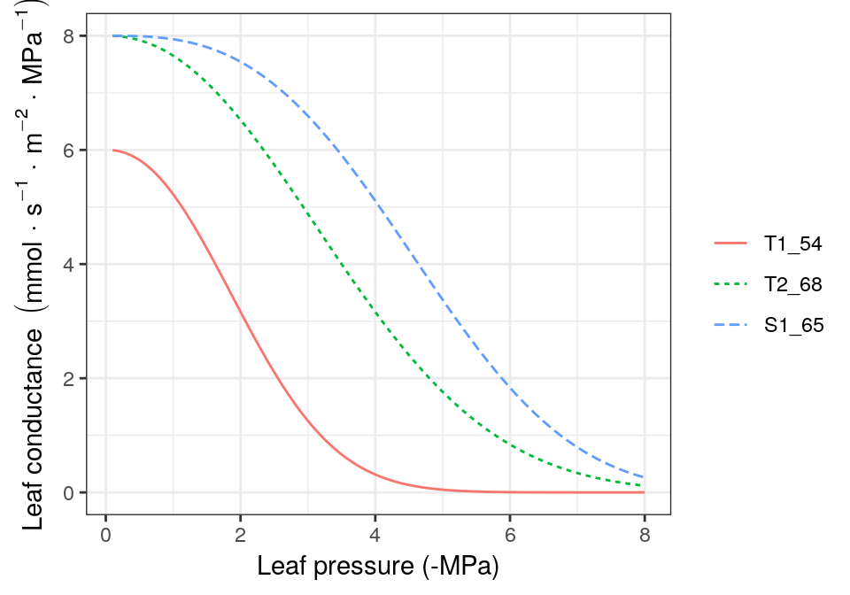
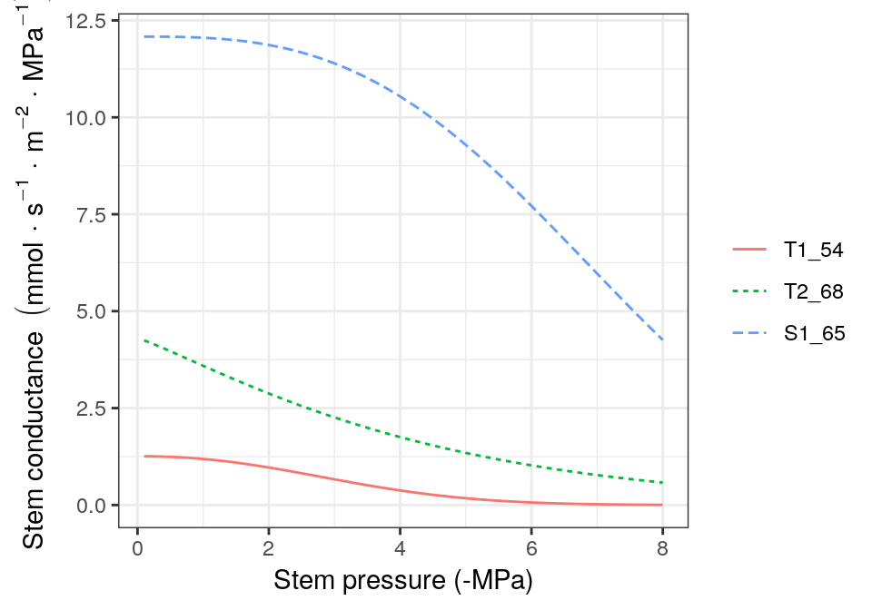
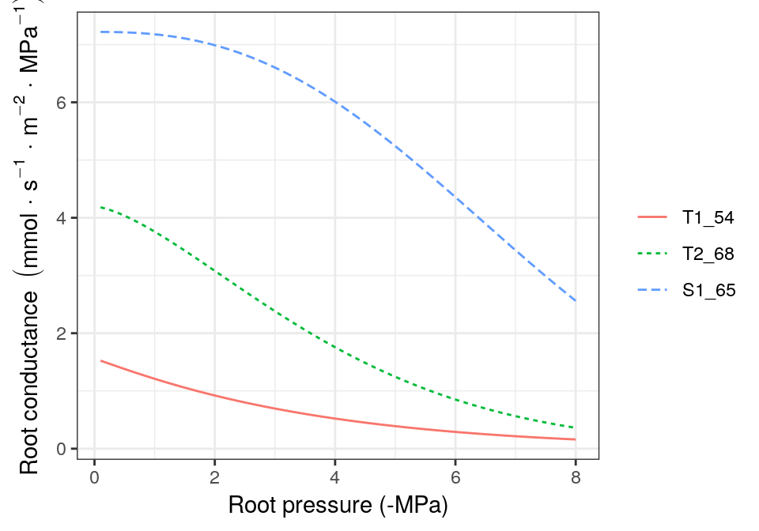
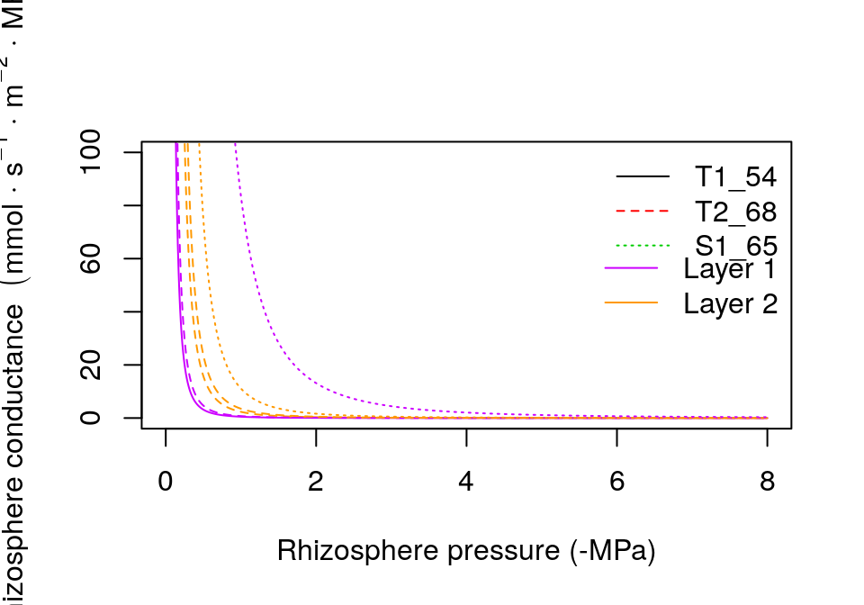
The maximum values and shape of vulnerability curves for leaves and stems are regulated by parameters in paramsTransp. Roots have vulnerability curve parameters in the same data frame, but maximum conductance values need to be specified for each soil layer and are given in below$VCroot_kmax. Note that the last call to hydraulics_vulnerabilityCurvePlot() includes a soil object. This is because the van Genuchten parameters that define the shape of the vulnerability curve for the rhizosphere are stored in this object. Maximum conductance values in the rhizosphere are given in below$VGrhizo_kmax.
Supply functions
The vulnerability curves conformng the hydraulic network are used in the model to build the supply function, which relates water flow (i.e. transpiration) with the drop of water potential along the whole hydraulic pathway. The supply function contains not only these two variables, but also the water potential of intermediate nodes in the the hydraulic network. Function hydraulics_supplyFunctionPlot() can be used to inspect any of this variables:
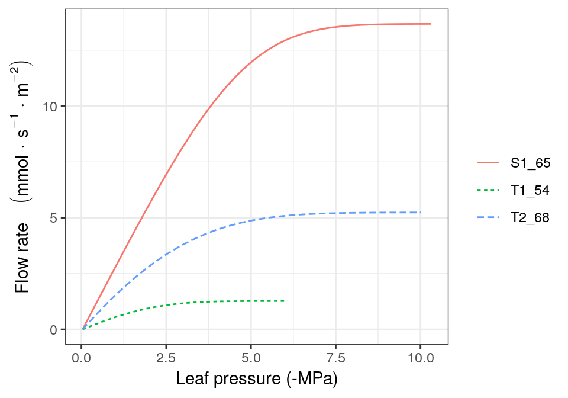
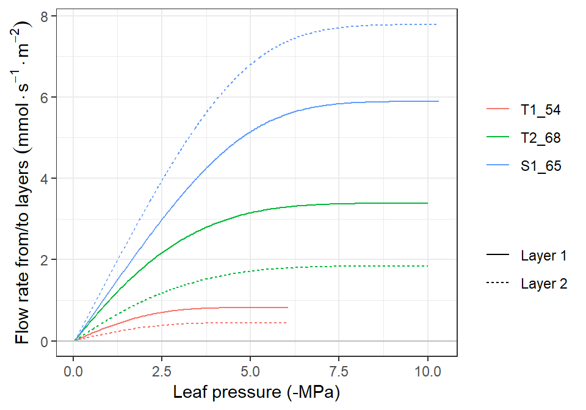
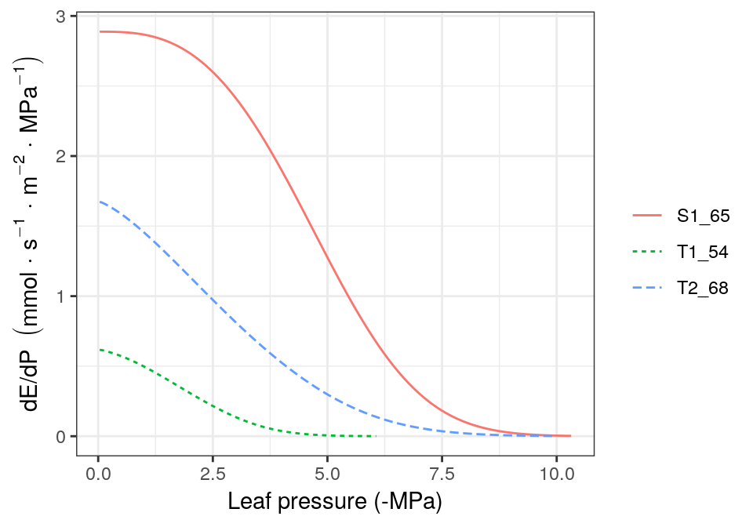
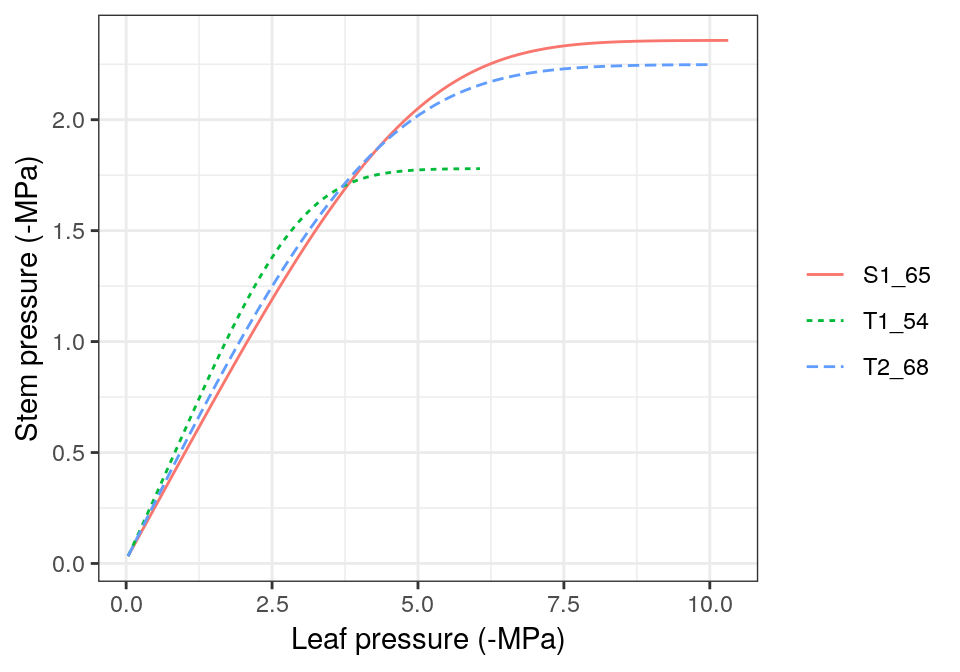
Calls to hydraulics_supplyFunctionPlot() always need both a spwbInput object and a soil object. The soil moisture state (i.e. its water potential) is the starting point for the calculation of the supply function, so different curves will be obtained for different values of soil moisture.
Stomatal regulation and photosynthesis
The soil water balance model determines stomatal conductance and transpiration separately for sunlit and shade leaves. Stomatal conductance is determined after building a photosynthesis function corresponding to the supply function and finding the value of stomatal conductance that maximizes carbon revenue while avoiding hydraulic damage (a profit-maximization approach). Given a meteorological and soil inputs and a chosen day and timestep, function transp_stomatalRegulationPlot() allows displaying the supply and photosynthesis curves for sunlit and shade leaves, along with an indication of the values corresponding to the chosen stomatal aperture:
d = 100
latitude = 41.82592, elevation = 100, type="E")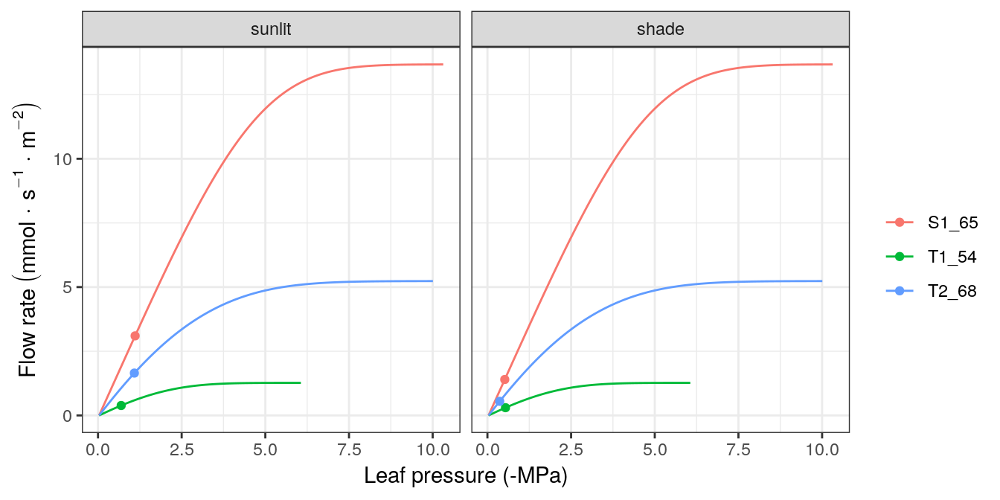
latitude = 41.82592, elevation = 100, type="An")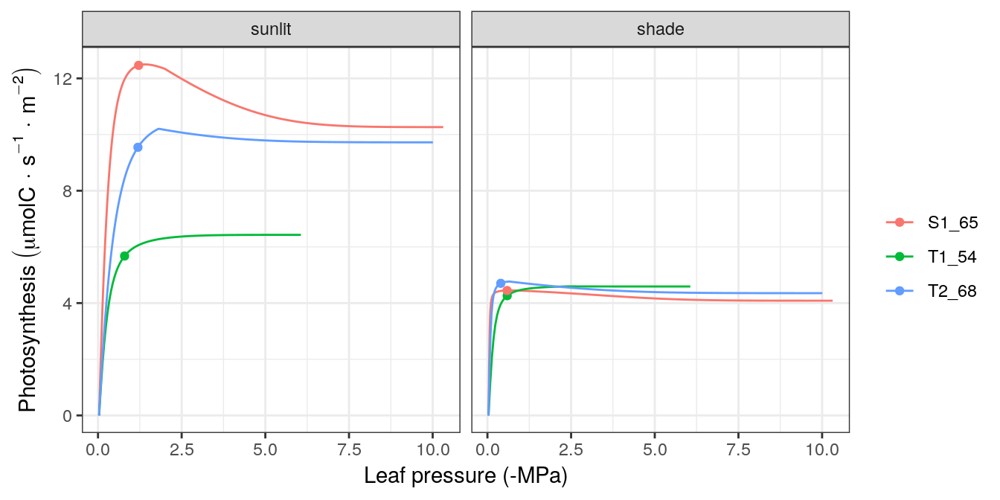
latitude = 41.82592, elevation = 100, type="Gw")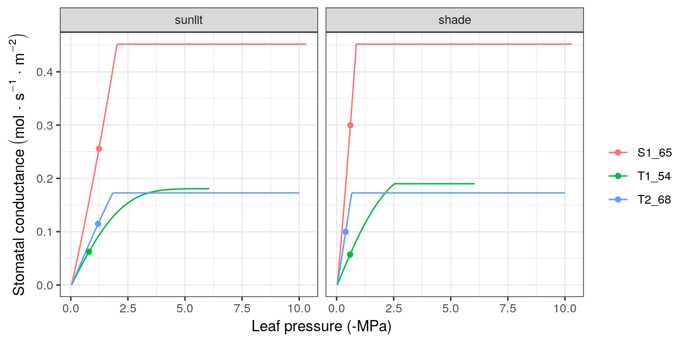
latitude = 41.82592, elevation = 100, type="T")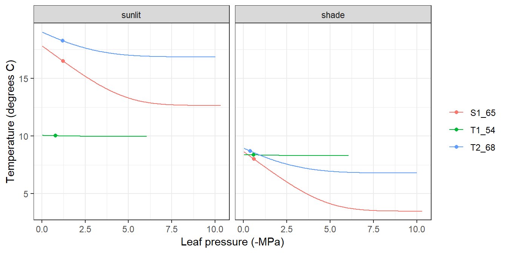
latitude = 41.82592, elevation = 100, type="VPD")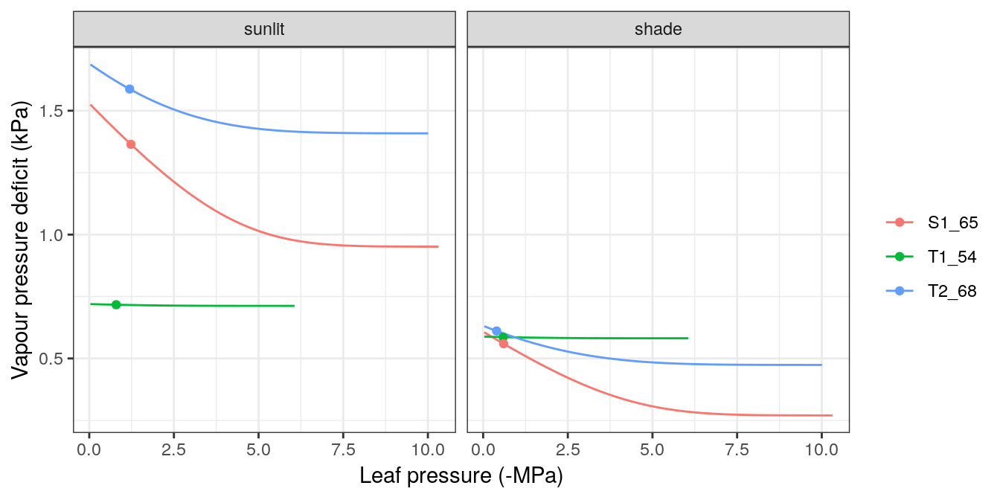
Water balance for a single day
Running the model
Soil water balance simulations will normally span periods of several months or years, but since the model operates at a daily and subdaily temporal scales, it is possible to perform soil water balance for one day only. This is done using function spwb_day(). In the following code we select the same day as before from the meteorological input data and perform soil water balance for that day only:
examplemeteo$MinTemperature[d], examplemeteo$MaxTemperature[d],
examplemeteo$MinRelativeHumidity[d], examplemeteo$MaxRelativeHumidity[d],
examplemeteo$Radiation[d], examplemeteo$WindSpeed[d],
latitude = 41.82592, elevation = 100,
slope= 0, aspect = 0, prec = examplemeteo$Precipitation[d])The output of spwb_day() is a list with several elements:
names(sd1)## [1] "cohorts" "WaterBalance" "EnergyBalance"
## [4] "Soil" "Stand" "Plants"
## [7] "RhizoPsi" "SunlitLeaves" "ShadeLeaves"
## [10] "ExtractionInst" "PlantsInst" "LightExtinction"
## [13] "WindExtinction"Water balance output
Element WaterBalance contains the soil water balance flows of the day (precipitation, infiltration, transpiration, …)
sd1$WaterBalance## PET Rain Snow
## 5.0233468 0.0000000 0.0000000
## NetRain Snowmelt Runon
## 0.0000000 0.0000000 0.0000000
## Infiltration Runoff DeepDrainage
## 0.0000000 0.0000000 0.0000000
## SoilEvaporation PlantExtraction Transpiration
## 0.5000000 0.8609921 0.8609921
## HydraulicRedistribution
## 0.0000000And Soil contains water evaporated from each soil layer, water transpired from each soil layer and the final soil water potential:
sd1$Soil## SoilEvaporation HydraulicInput HydraulicOutput PlantExtraction
## 1 4.999998e-01 0 0.5273331 0.5273331
## 2 1.529512e-07 0 0.3336590 0.3336590
## psi
## 1 -0.03555815
## 2 -0.03341246Soil and canopy energy balance
Element EnergyBalance contains subdaily variation in atmosphere, canopy and soil temperatures, as well as canopy and soil energy balance components.
names(sd1$EnergyBalance)## [1] "Temperature" "CanopyEnergyBalance" "SoilEnergyBalance"Package medfate provides a plot function for objects of class spwb_day that can be used to inspect the results of the simulation. We use this function to display subdaily dynamics in plant, soil and canopy variables. For example, we can use it to display temperature variations (only the temperature of the topmost soil layer is drawn):
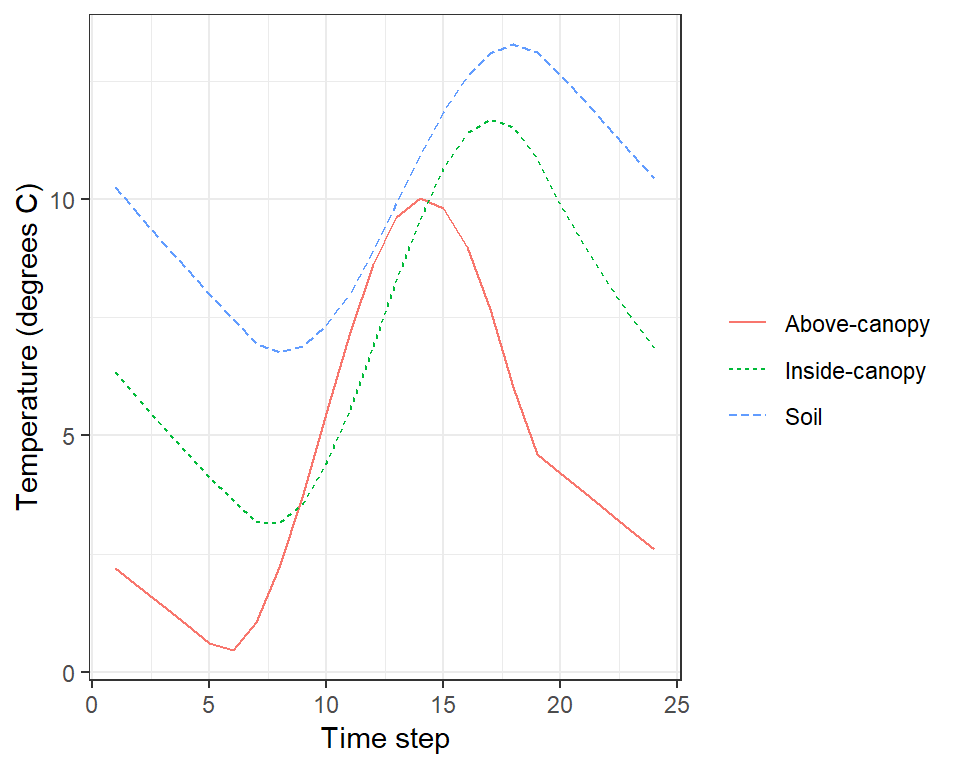

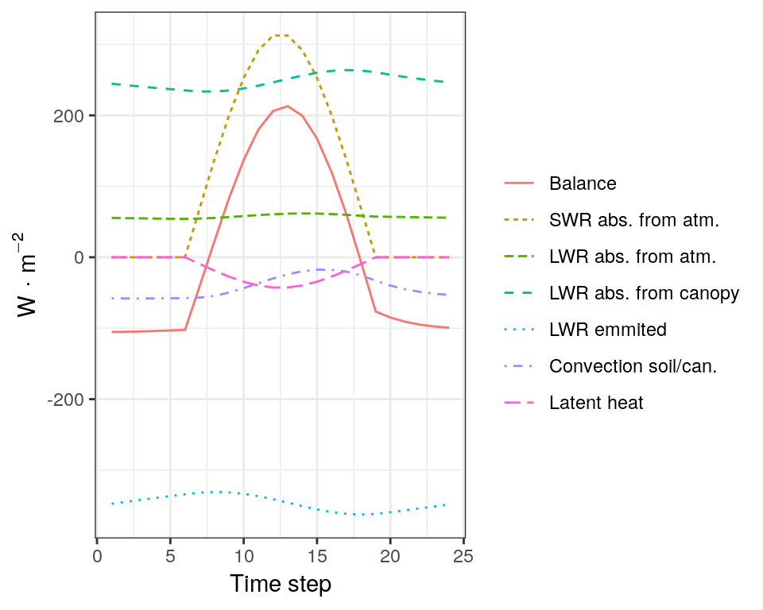
Plant output
Element Plants contains output values by plant cohort. Several output variables can be inspected in this element.
sd1$Plants## LAI Extraction Transpiration Photosynthesis RootPsi
## T1_54 0.81670117 0.2147913 0.2147913 1.6068891 -0.3370575
## T2_68 0.79779523 0.5175457 0.5175457 1.8928595 -0.3151166
## S1_65 0.08913325 0.1286551 0.1286551 0.1885441 -0.3869046
## StemPsi StemPLC LeafPsiMin LeafPsiMax LeafPsiMin_SL
## T1_54 -0.6707915 1.582380e-03 -0.7444369 -0.08393788 -0.9489844
## T2_68 -0.6028783 1.830652e-02 -0.7493966 -0.06369044 -1.2662108
## S1_65 -0.5980477 3.521207e-05 -0.9179349 -0.05084006 -1.3203596
## LeafPsiMax_SL LeafPsiMin_SH LeafPsiMax_SH dEdP DDS
## T1_54 -0.08393788 -0.6424626 -0.08393788 0.5888088 0.055912530
## T2_68 -0.06369044 -0.4297945 -0.06369044 1.6252892 0.031413267
## S1_65 -0.05084006 -0.7787794 -0.05084006 2.8837937 0.001362416
## StemRWC LeafRWC
## T1_54 0.9940219 0.9780150
## T2_68 0.9847179 0.9878989
## S1_65 0.9973600 0.9859628While Plants contains one value per cohort and variable that summarizes the whole simulated day, information by disaggregated by time step can be accessed in PlantsInst. Moreover, we can use function plot.spwb_day() to draw plots of sub-daily variation per species of plant transpiration per ground area (L·m\(^{-2}\)), transpiration per leaf area (also in L·m\(^{-2}\)), plant net photosynthesis (in g C·m\(^{-2}\)), and plant water potential (in MPa):
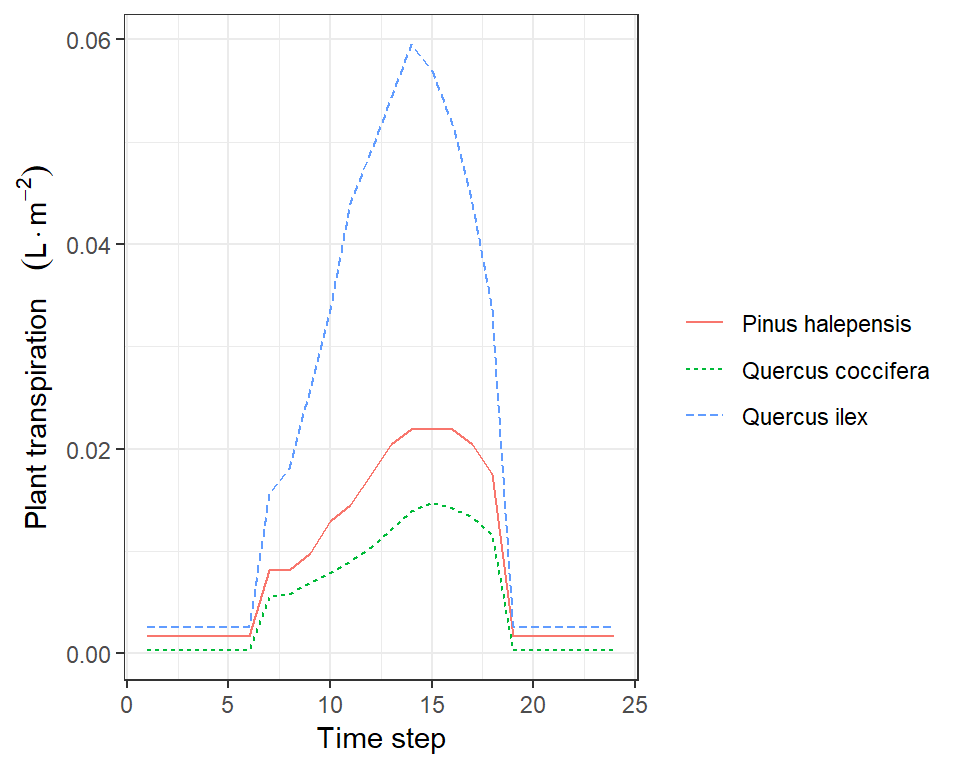
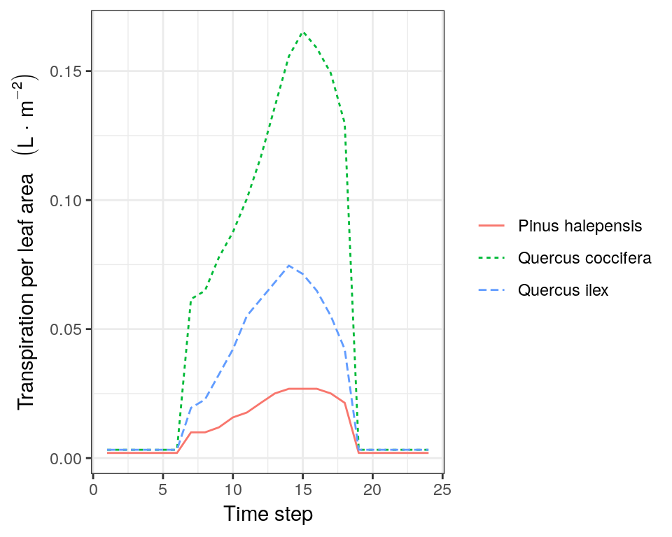
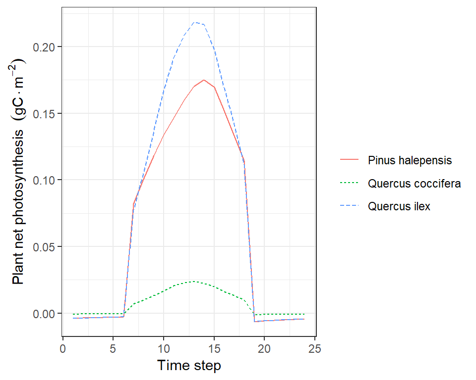
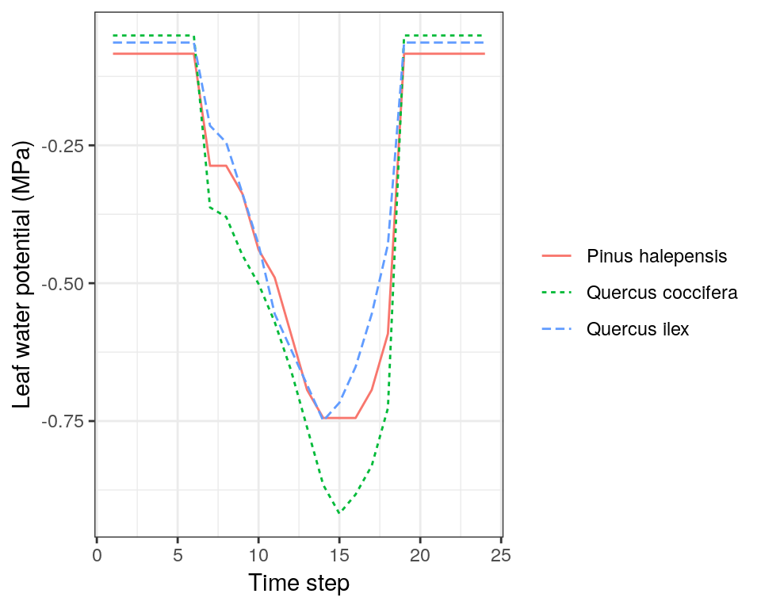
Output for sunlit and shade leaves
The model distinguishes between sunlit and shade leaves for stomatal regulation. Static properties of sunlit and shade leaves, for each cohort, can be accessed via:
sd1$SunlitLeaves## LAI Vmax298 Jmax298
## T1_54 0.39267054 48.58012 100.65801
## T2_68 0.30498777 50.32556 98.82662
## S1_65 0.02201173 70.01225 114.55776sd1$ShadeLeaves## LAI Vmax298 Jmax298
## T1_54 0.42403063 41.02069 84.99488
## T2_68 0.49280746 45.36770 89.09065
## S1_65 0.06712152 70.01225 114.55776Instantaneous values are also stored for sunlit and shade leaves. We can also use the plot function for objects of class spwb_day to draw instantaneous variations in temperature for sunlit and shade leaves:
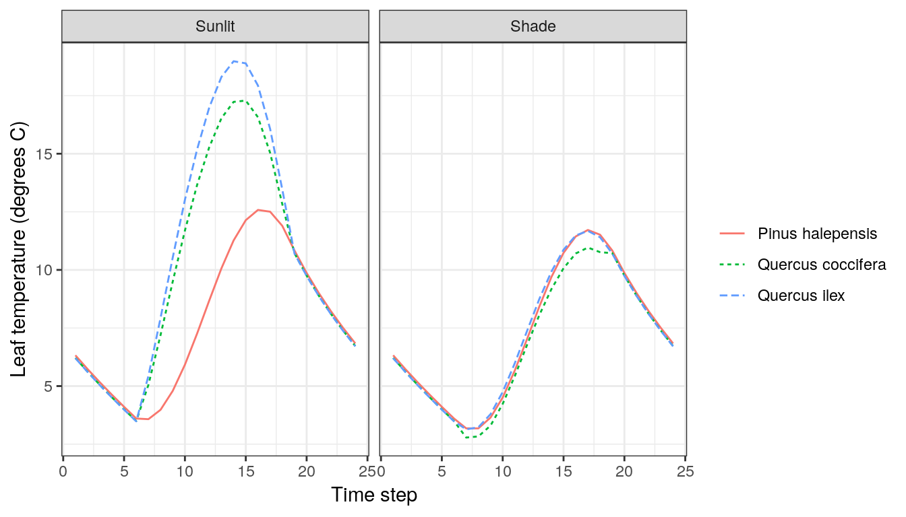
Note that sunlit leaves of some species reach temperatures higher than the canopy. We can also plot variations in instantaneous net photosynthesis rates:
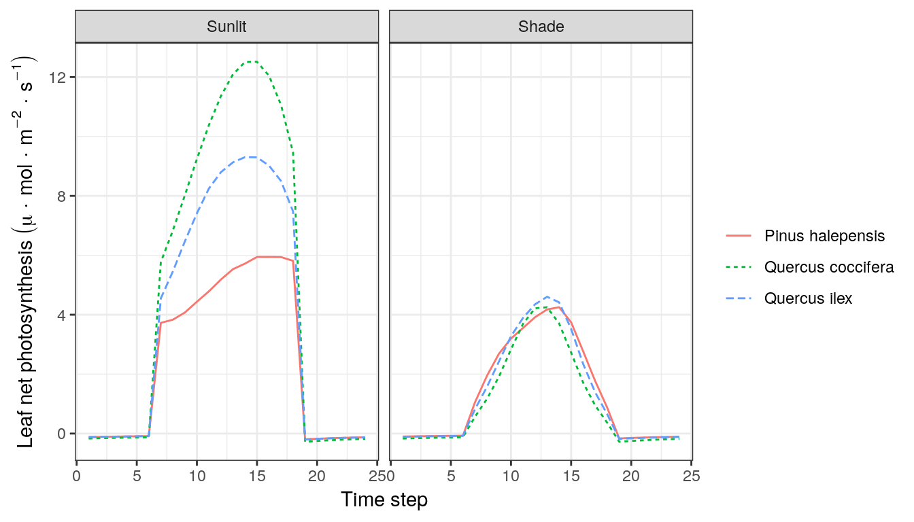
Or variations in stomatal conductance:
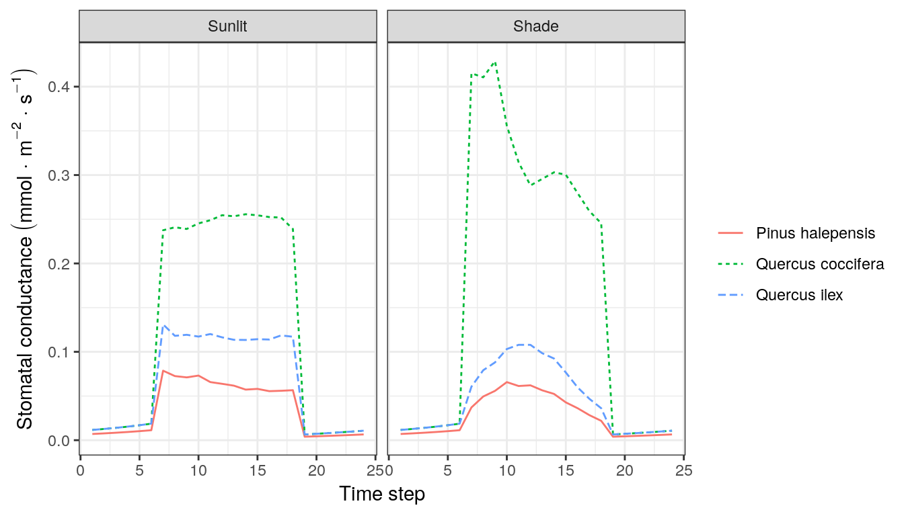
Or variations in vapour pressure deficit:
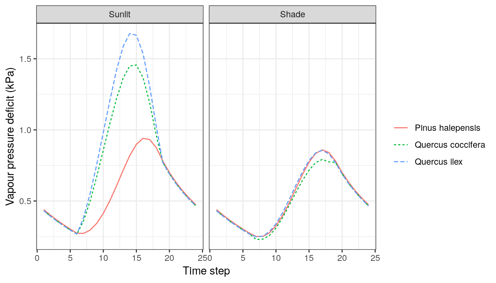
Or variations in leaf water potential:
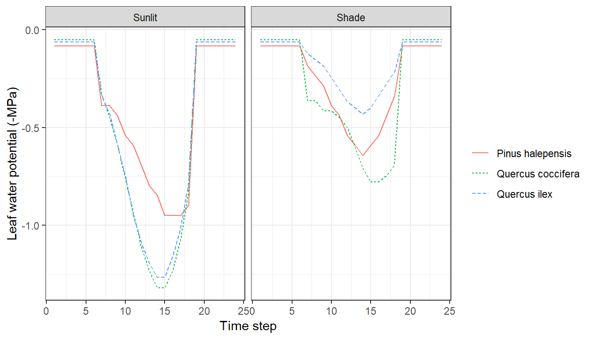
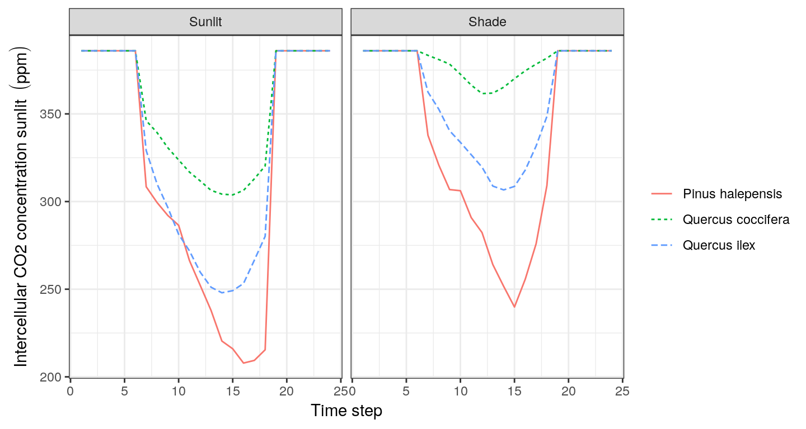

Water balance for multiple days
Running the model
Users will often use function spwb() to run the soil water balance model for several days. This function requires the spwbInput object, the soil object and the meteorological data frame. However, running spwb_day() modified the input objects. In particular, the soil moisture at the end of the simulation was:
examplesoil$W## [1] 0.9849889 0.9973781And the temperature of soil layers:
examplesoil$Temp## [1] 9.894257 8.091522We can also see the current state of canopy variables:
x$canopy## $gdd
## [1] 1.232373
##
## $Temp
## [1] 6.235563We simply use function spwb_resetInputs() to reset state variables to their default values, so that the new simulation is not affected by the end state of the previous simulation:
spwb_resetInputs(x, examplesoil)
examplesoil$W## [1] 1 1examplesoil$Temp## [1] NA NAx$canopy## $gdd
## [1] 0
##
## $Temp
## [1] NANow we are ready to call function spwb(). In this example, we only simulate 61 days to save computational time:
## Initial soil water content (mm): 195.696
## Performing daily simulations .......done.
## Final soil water content (mm): 145.223
## Change in soil water content (mm): -50.4731
## Water balance result (mm): -50.4731
## Water balance components:
## Precipitation (mm) 36
## Rain (mm) 26 Snow (mm) 10
## Interception (mm) 6 Net rainfall (mm) 20
## Infiltration (mm) 30 Runoff (mm) 0 Deep drainage (mm) 18
## Soil evaporation (mm) 3 Transpiration (mm) 58
## Plant extraction from soil (mm) 58 Hydraulic redistribution (mm) 2Function spwb() returns an object of class spwb. If we inspect its elements, we realize that the output is arranged differently than in spwb_day():
names(S)## [1] "latitude" "topography" "spwbInput"
## [4] "soilInput" "WaterBalance" "Soil"
## [7] "Stand" "EnergyBalance" "Temperature"
## [10] "PlantLAI" "PlantAbsorbedSWR" "PlantAbsorbedLWR"
## [13] "PlantTranspiration" "PlantPhotosynthesis" "dEdP"
## [16] "LeafPsiMin" "LeafPsiMax" "LeafPsiMin_SL"
## [19] "LeafPsiMax_SL" "LeafPsiMin_SH" "LeafPsiMax_SH"
## [22] "LeafRWC" "StemPsi" "StemPLC"
## [25] "StemRWC" "RootPsi" "RhizoPsi"
## [28] "PlantStress" "subdaily"In particular, element spwbInput contains a copy of the input parameters that were used to run the model:
names(S$spwbInput)## [1] "control" "canopy" "cohorts"
## [4] "above" "below" "paramsBase"
## [7] "paramsAnatomy" "paramsTransp" "paramsWaterStorage"
## [10] "Transpiration" "Photosynthesis" "PLCstem"
## [13] "RWCsympstem" "RWCsympleaf" "Einst"
## [16] "psiRhizo" "psiRoot" "psiStem"
## [19] "psiLeaf"As before, WaterBalance contains water balance components, but in this case in form of a data frame with days in rows:
head(S$WaterBalance)## PET Precipitation Rain Snow NetRain Snowmelt
## 2001-04-20 2.641801 2.1625135 0.0000000 2.162513 0.00000000 0.0000000
## 2001-04-21 1.875251 3.7992356 0.0000000 3.799236 0.00000000 0.0000000
## 2001-04-22 2.903129 4.1962782 0.0000000 4.196278 0.00000000 0.9135326
## 2001-04-23 3.633982 1.4698434 1.4698434 0.000000 0.59989217 9.2444948
## 2001-04-24 3.891957 0.1538991 0.1538991 0.000000 0.06281136 0.0000000
## 2001-04-25 4.171116 0.1317847 0.1317847 0.000000 0.05378573 0.0000000
## Infiltration Runoff DeepDrainage Evapotranspiration
## 2001-04-20 0.00000000 0 0.00000 0.4518367
## 2001-04-21 0.00000000 0 0.00000 0.4634813
## 2001-04-22 0.91353255 0 0.00000 0.5878512
## 2001-04-23 9.84438693 0 9.25475 2.0049774
## 2001-04-24 0.06281136 0 0.00000 0.9816666
## 2001-04-25 0.05378573 0 0.00000 1.0971030
## Interception SoilEvaporation PlantExtraction Transpiration
## 2001-04-20 0.00000000 0.00000000 0.4518367 0.4518367
## 2001-04-21 0.00000000 0.00000000 0.4634813 0.4634813
## 2001-04-22 0.00000000 0.00000000 0.5878512 0.5878512
## 2001-04-23 0.86995127 0.50000000 0.6350261 0.6350261
## 2001-04-24 0.09108774 0.13686755 0.7537113 0.7537113
## 2001-04-25 0.07799896 0.08639181 0.9327123 0.9327123
## HydraulicRedistribution
## 2001-04-20 0
## 2001-04-21 0
## 2001-04-22 0
## 2001-04-23 0
## 2001-04-24 0
## 2001-04-25 0Elements PlantLAI, PlantStress, LeafPsi, PlantTranspiration and PlantPhotosynthesis contain daily values by plant cohorts, for example plant water potentials are:
head(S$LeafPsi)## NULLPlotting and summarizing results
Package medfate also provides a plot function for objects of class spwb. It can be used to show the meteorological input. Additionally, it can also be used to draw soil and plant variables. In the code below we draw water fluxes, soil water potentials, plant transpiration and plant (mid-day) water potential:

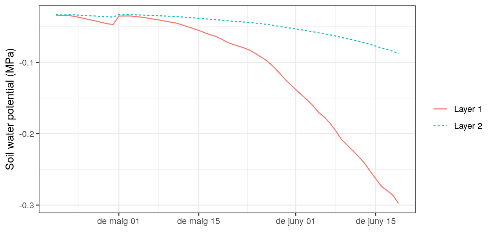
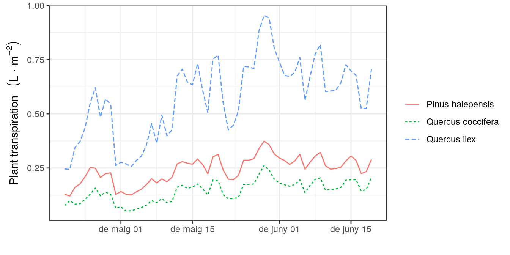
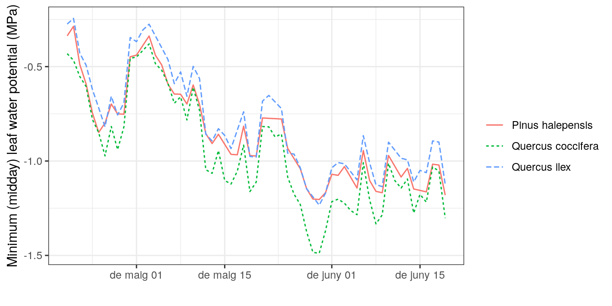
While the simulation model uses daily steps, users may be interested in outputs at larger time scales. The package provides a summary for objects of class spwb. This function can be used to summarize the model’s output at different temporal steps (i.e. weekly, annual, …). For example, to obtain the average soil moisture and water potentials by months one can use:
## W.1 W.2 ML.1 ML.2 MLTot WTD SWE
## 2001-04-01 0.9735342 0.9931676 66.62691 126.3883 193.0152 1000 1.578978
## 2001-05-01 0.8928562 0.9649959 61.10545 122.8032 183.9087 1000 0.000000
## 2001-06-01 0.6858044 0.8587249 46.93521 109.2794 156.2146 1000 0.000000
## PlantExt.1 PlantExt.2 HydraulicInput.1 HydraulicInput.2
## 2001-04-01 0.4371797 0.2855046 0.000000000 0
## 2001-05-01 0.5386865 0.4055621 0.002957157 0
## 2001-06-01 0.4223659 0.6939848 0.075629147 0
## psi.1 psi.2
## 2001-04-01 -0.03916922 -0.03439474
## 2001-05-01 -0.06506442 -0.03980367
## 2001-06-01 -0.21569861 -0.06794885Parameter output is used to indicate the element of the spwb object for which we desire summaries. Similarly, it is possible to calculate the average stress of plant cohorts by months:
## T1_54 T2_68 S1_65
## 2001-04-01 0.04917348 0.02526437 0.0008394931
## 2001-05-01 0.07221723 0.03935568 0.0021221790
## 2001-06-01 0.13262933 0.07924091 0.0036975195The summary function can be also used to aggregate the output by species. In this case, the values of plant cohorts belonging to the same species will be averaged using LAI values as weights. For example, we may average the daily drought stress across cohorts of the same species (here there is only one cohort by species, so this does not modify the output):
## Pinus halepensis Quercus coccifera Quercus ilex
## 2001-04-20 0.03170205 0.0002410749 0.01318335
## 2001-04-21 0.03015776 0.0004457775 0.01309502
## 2001-04-22 0.03915699 0.0002999449 0.01890498
## 2001-04-23 0.04439013 0.0004077261 0.02100917
## 2001-04-24 0.05471853 0.0008485824 0.02579133
## 2001-04-25 0.06604960 0.0011486847 0.03323843Or we can combine the aggregation by species with a temporal aggregation (here monthly averages):
## Pinus halepensis Quercus coccifera Quercus ilex
## 2001-04-01 0.04917348 0.0008394931 0.02526437
## 2001-05-01 0.07221723 0.0021221790 0.03935568
## 2001-06-01 0.13262933 0.0036975195 0.07924091